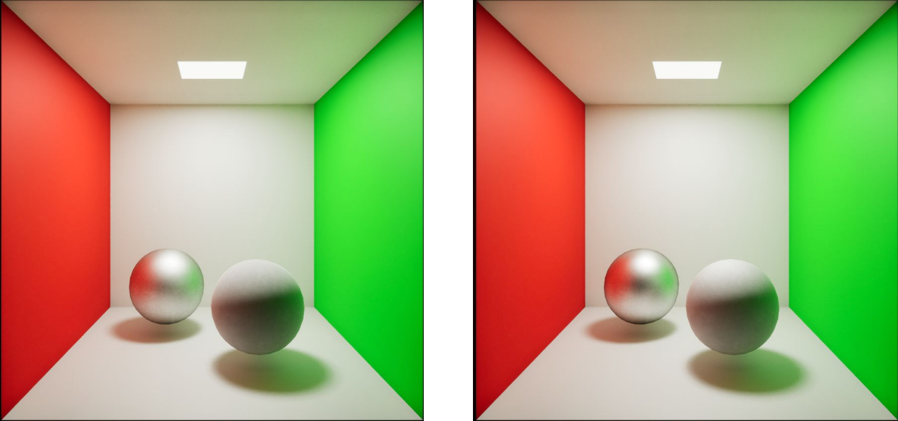

Zihan Wang
RIT Computer Science M.S. | Xiamen University Digital Media Technology B.Eng. | NetEase VR & Alibaba Unity Internships | VR Developer at RIT MAGIC Spell Studios
Target roles: Engine Developer / Graphics Rendering Engineer / Low-Level Game Client Developer.
Technical focus: C++ graphics systems, Vulkan / OpenGL pipelines, Render Graphs, resource lifecycles, GPU debugging, and performance analysis.
Additional areas: XR real-time interaction systems, UE5 rendering modules, and 3D AI / neural rendering.
Target roles: Engine Developer / Graphics Rendering Engineer / Low-Level Game Client Developer.
Technical focus: C++ graphics systems, Vulkan / OpenGL pipelines, Render Graphs, resource lifecycles, GPU debugging, and performance analysis.
Additional areas: XR real-time interaction systems, UE5 rendering modules, and 3D AI / neural rendering.
C++ Engine Development
Vulkan / OpenGL
Render Graph / Resource Management
GPU Profiling / Debug Tools
Unreal Engine 5 / Unity
OpenXR / Meta SDK
PyTorch / OpenCV
Role focus: Graphics rendering, engine development, low-level game client, and XR real-time systems. This portfolio goes beyond isolated demos to demonstrate explainable, extensible graphics systems built around rendering pipelines, resource management, synchronization, debugging tools, and performance analysis.
Suggested path: Vulkan Engine → OpenGL Engine → UE5 BRDF → Technical Deep Dives → Résumé PDF. Key discussion topics include Vulkan synchronization, Render Graphs, PBR/IBL, GPU profiling, and stable real-time XR feedback.
C++ / Vulkan
Low-level graphics APIs, explicit synchronization, resource lifecycles, and real-time rendering frameworks.
Engine Systems
Render Graphs, pass dependencies, material / shader / texture management, and debugging tools.
Profiling
GPU timestamps, RenderDoc, validation layers, and Unity Profiler for targeted diagnosis.
Featured Projects | Graphics Rendering & Engine Development
All
Engine
Graphics
XR/VR
AI / Vision
Vulkan Engine Prototype / Real-Time Renderer
C++20Vulkan 1.3GLSLRender GraphPBR / IBLGPU Profiling
- Independently built a Vulkan 1.3 engine prototype covering core explicit-API systems including the swapchain, command buffers, descriptors, pipelines, Dynamic Rendering, and Synchronization2.
- Implemented PBR materials, normal mapping, shadow mapping, custom PCF, HDR, Bloom, tone mapping, IBL prefiltering, and a BRDF LUT as a complete real-time rendering pipeline.
- Designed a Render Graph layer that organizes rendering through declared pass reads and writes while centralizing image layout transitions, transient render targets, resource lifecycles, and barrier generation.
- Added GPU timestamps, a scene hierarchy, material parameter inspection, and render-target viewers to diagnose rendering errors, profile pass timing, and validate resource states.
Engineering Challenges
- Coordinating pipeline stages, access masks, image layouts, and per-frame resource states under Vulkan's explicit synchronization model.
- Keeping descriptor, buffer, image, and transient render-target lifetimes aligned with frame resources and Render Graph dependencies.
- Defining clear pass boundaries across PBR, shadows, post-processing, and debug views so the renderer remains maintainable as features grow.
Technical Deep-Dive Topics
- Synchronization2 / Image Layout Transitions / Barrier Management
- Render Graph resource declarations, transient allocation, and debug visualization
- PBR + IBL pipeline, BRDF LUT, HDR / Bloom / Tone Mapping

Modular OpenGL Rendering Engine (CGRenderEngine)
C++OpenGLGLSLPBRHDR
- Built a modular OpenGL rendering engine spanning scene organization, shader / material management, texture resources, lighting, shadows, HDR, and post-processing.
- Implemented PBR, shadow mapping, framebuffer post-processing, tone mapping, and foundational debugging workflows, developing an end-to-end understanding from CPU resource submission to GPU output.
- Extended the project with ray-tracing and supersampling experiments to compare sampling, shadows, reflections, and noise convergence in real-time rasterization and offline rendering.
Engineering Value
- Established the module boundaries for shaders, materials, textures, framebuffers, and post-processing that informed the later Vulkan engine.
- Built a unified understanding of the rendering equation, sampling, shadow quality, and performance costs by comparing real-time rasterization with offline ray tracing.

UE5 Rendering Module: Multiple-Scattering BRDF Energy Compensation (Kulla–Conty)
C++HLSLUnreal Engine 5PBR
- Implemented BRDF energy compensation based on Kulla–Conty multiple scattering to address energy loss in high-roughness GGX materials under a single-scattering model.
- Built a Monte Carlo integration tool to generate the compensation LUT and integrated it into the UE5 material pipeline through a custom HLSL node.
- Compared baseline GGX against the compensated model and mapped the practical relationships among Fresnel, NDF, the geometry term, split-sum approximation, and LUT lookup.
Technical Value
- Demonstrates the ability to explain a PBR module through the rendering equation, microfacet BRDFs, energy conservation, and real-time lookup optimization—not just its visual result.
- Supports deeper discussion of Monte Carlo integration, LUT precomputation, split-sum approximation, and UE material-system integration.

VR Real-Time Interaction System: Uncanny Valley Experiment
UnityMeta SDKFace Tracking
- Built a VR experiment around Meta Quest Pro face tracking, mapping the user's expressions to a virtual character in real time to study how facial realism and noise affect uncanny-valley perception.
- Introduced smoothing filters, state synchronization, subtle eye motion, and controllable material / noise variables to reduce the perceptual impact of tracking jitter, dropped input, and discontinuous expressions.
- Combined XR interaction, real-time character driving, user-study design, Unity engineering, and stable real-time feedback.
Engineering Challenges
- Balancing low-latency feedback with smooth, stable output when VR input data contains jitter, dropped frames, and discontinuities.
- Keeping face tracking, character expression mapping, subtle eye motion, and material variables controlled within one experiment to avoid confounding factors.

Real-Time 3D Style Transfer (3DGS Style Transfer)
PyTorch3D Gaussian SplattingLPIPS
- Built a real-time style-transfer pipeline for 3D Gaussian Splatting scenes, focusing on cross-view style instability and temporal flicker.
- Combined perceptual loss with reprojection-consistency constraints to improve structural preservation and temporal consistency across rendered views.
- Complements the core graphics work with a 3D AI / neural-rendering project combining PyTorch, computer vision, and real-time 3D representations.
Role Relevance
- Demonstrates an understanding of neural rendering, differentiable / learned visual methods, and real-time 3D representations.
- Relevant to 3D AI, generative AI, NeRF / 3DGS, and roles spanning computer vision and graphics.

Skills Matrix | Aligned with Target Roles
Engine / Graphics Systems
C++VulkanOpenGLRender Graph
- Rendering-pipeline abstractions, pass organization, resource lifecycles, and descriptor / buffer / image management.
- Modular shader / material / texture / framebuffer systems and integrated debugging tools.
Real-Time Rendering / Performance
PBRIBLShadow MappingGPU Profiling
- Direct lighting, shadows, HDR, Bloom, tone mapping, BRDF LUTs, and post-processing chains.
- GPU timestamps, RenderDoc, validation layers, and profilers for rendering errors and performance bottlenecks.
Real-Time Interaction / Production
UnityUE5OpenXRMeta SDK
- VR tracking, state synchronization, input filtering, character driving, and stable low-latency feedback.
- Professional and project experience at NetEase VR, Alibaba Unity, and RIT MAGIC Spell Studios.
Technical Deep Dives | Engine Development Capabilities
Vulkan Pipeline & Resource Management
- Manage the full resource lifecycle in an explicit API: creation, upload, layout transition, synchronization, use, and destruction.
- Build explainable debugging paths around image layout transitions, Synchronization2, descriptor updates, and multi-frame resource organization.
- Use debug panels and GPU timestamp analysis to diagnose rendering errors, pass duration, and resource-state issues.
Render Graph & Pass Organization
- Organize rendering through declared pass reads and writes, reducing errors from hand-written state transitions and manual barrier management.
- Focus on resource lifecycles, transient targets, pass boundaries, dependencies, and debug visualization—practical engine-architecture concerns.
- Model how forward, deferred, and post-processing stages fit into a unified execution graph.
Rendering Modules: PBR & Real-Time Lighting
- Implemented a real-time pipeline spanning direct lighting, shadows, normal mapping, HDR, Bloom, and IBL.
- Extended that foundation through the UE5 BRDF project, exploring single scattering, multiple-scattering compensation, and LUT precomputation.
Real-Time Systems & XR Engineering
- Handled tracking jitter, dropped input, state synchronization, and continuity of real-time feedback in VR projects.
- Complements engine work with engineering judgment around real-time interaction, performance stability, and user perception.
Experience
RIT · MAGIC Spell Studios | VR Developer (Unreal VR)
- Developed research-focused VR systems and immersive applications using Unreal Engine (C++ / Blueprint).
- Owned VR interaction, character / scene modules, system integration, and performance tuning, including tracking jitter, state synchronization, and stable real-time feedback.
NetEase (Guangzhou) | VR Development Intern
- Developed VR interaction systems and core gameplay prototypes with Unity + Meta Quest, contributing input, interaction feedback, and scene logic.
- Used Unity Profiler and runtime diagnostics to investigate rendering, scripting, and interaction-path bottlenecks, reducing noticeable frame drops and improving stability in internal test scenes.
Alibaba (Hangzhou) | Unity Game Development Intern
- Contributed to core Unity game systems and gameplay modules, owning inventory, configuration loading, and resource-management features.
- Optimized data organization, lookup logic, and resource references to improve memory use, access efficiency, and maintainability.
Résumé Summary
Zihan Wang
Computer Science M.S. focused on engine development and graphics rendering. Project experience spans Vulkan / OpenGL engine prototypes, Render Graphs, resource management, GPU debugging and performance analysis, UE5 rendering modules, VR real-time interaction systems, and 3DGS style transfer. This portfolio highlights engineering capability from low-level graphics APIs and rendering-pipeline organization to real-time system stability.
- Target roles: Engine Developer, Graphics Rendering Engineer, Low-Level Game Client Developer, XR Real-Time Systems Engineer.
- Core areas: Engine development, real-time rendering, rendering pipelines, graphics systems, and real-time 3D applications.
- Core technologies: C++, Vulkan, OpenGL, GLSL / HLSL, Unreal Engine 5, Unity, Meta SDK, and OpenXR.
- Engineering strengths: Resource management, Render Graphs, render-pass organization, debugging tools, GPU profiling, performance analysis, and real-time system stability.
- Education: RIT Computer Science M.S.; Xiamen University Digital Media Technology B.Eng.
Contact
- Phone: 184-6332-5253
- Email: zihanwang7@outlook.com
- GitHub: github.com/ZihanWG
- Portfolio: zihanwg.github.io/portfolio.git.io
- Résumé: assets/resume.pdf
WeChat QR Code